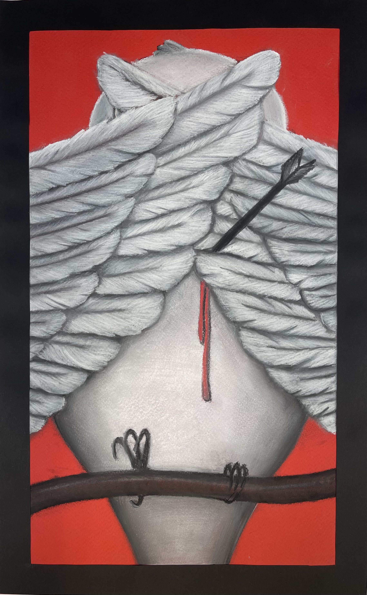
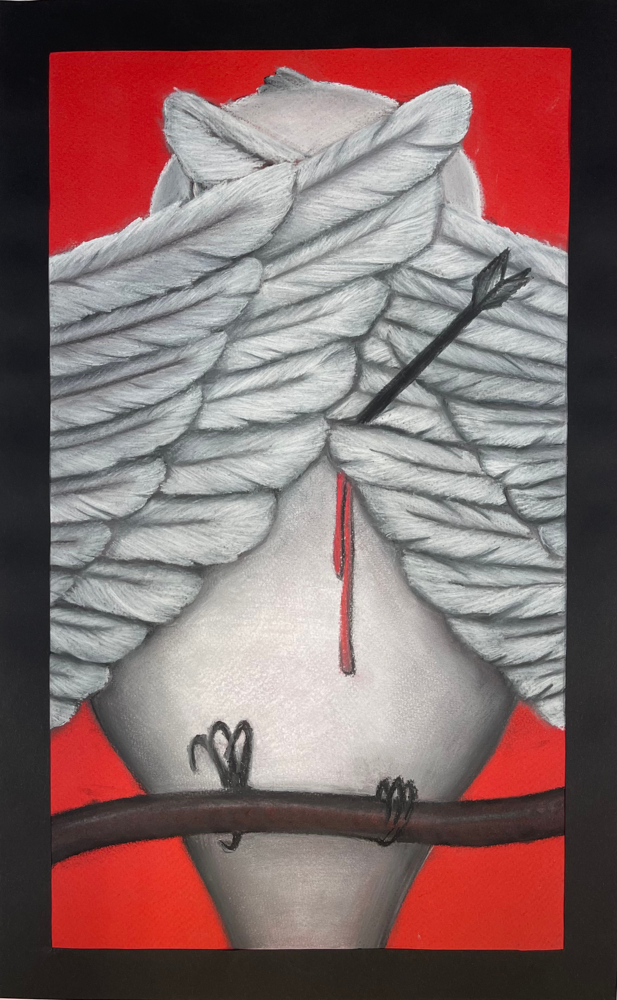

I Tried My Best...
This piece depicts a bird hiding behind its feathers to protect itself from potential harmful elements in the world. The seemingly small arrow symbolizes these elements, while the feathers represent a barrier between the bird (or an individual) and the arrow. Despite the bird's attempt to shield itself from harm, it proves unsuccessful. The feathers are not strong enough to protect the bird from the arrow, causing it to bleed. While this piece depicts a physical injury, it also represents the mental battles people face. Even the smallest words can cut through the walls one puts up and hurt deeply.
